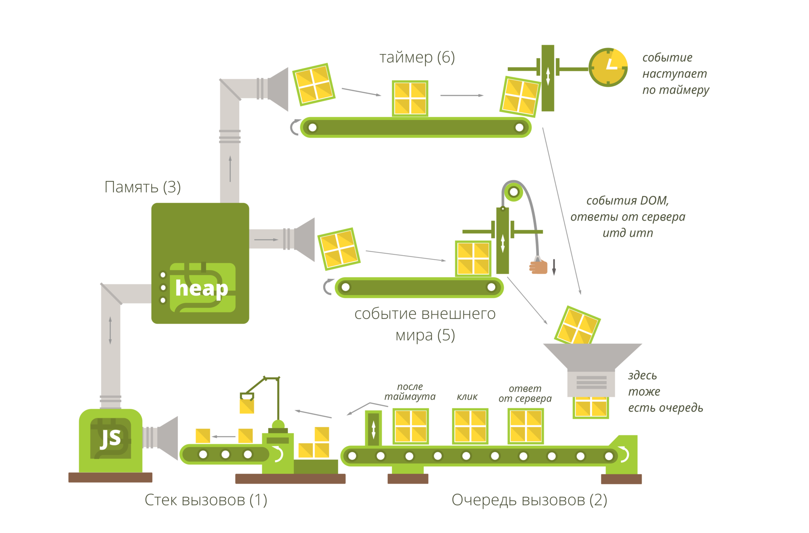

Dart
Один язык — все платформы
Алексей Золотых, Wrike
Что есть Dart?
- Dart -> что-то еще
- DartVM
Что есть все платформы?
Браузеры
Сервер
Мобильные устройства
Браузеры
Dart helps you craft beautiful, high-quality experiences across all screens, with:
- A client-optimized language
- Rich, powerful frameworks
- Delightful, flexible tooling
Typescript
function greeter(person: string) {
return "Hello, " + person;
}
let user = "Jane User";
document.body.innerHTML = greeter(user);
Javascript
function greeter(person) {
return "Hello, " + person;
}
let user = "Jane User";
document.body.innerHTML = greeter(user);
Typescript
function greeter(person: string) {
return "Hello, " + person;
}
let user = "Jane User";
document.body.innerHTML = greeter(user);
Dart
import 'dart:html';
void main() {
var user = "Jane User";
document.body.innerHtml = greeter(user);
}
String greeter(String person){
return "Hello, " + person;
}
Dart
import 'dart:html';
void main() {
var user = "Jane User";
document.body.innerHtml = greeter(user);
}
String greeter(String person){
return "Hello, " + person;
}- dart:async
- dart:collection
- dart:convert
- dart:core
- dart:developer
- dart:html
- dart:indexed_db
- dart:js
- dart:js_util
- dart:math
- dart:svg
- dart:typed_data
- dart:web_audio
- dart:web_gl
- dart:web_sql
- dart:cli
- dart:io
- dart:isolate
- dart:mirrors
dart:core
import 'dart:core'
import 'dart:core'
void main(){
final date = DateTime.now();
final berlinWallFell = new DateTime(1989, 11, 9);
final Duration diff = date.difference(berlinWallFell);
print('${diff.inDays} days');
}
void main(){
final date = DateTime.now();
final berlinWallFell = new DateTime(1989, 11, 9);
final Duration diff = date.difference(berlinWallFell);
print('${diff.inDays} days');
}
void main(){
final date = DateTime.now();
final berlinWallFell = new DateTime(1989, 11, 9);
final diff = date.difference(berlinWallFell);
print('${diff.inDays} days');
}
void main(){
final date = DateTime.now();
final berlinWallFell = new DateTime(1989, 11, 9);
final diff = date.difference(berlinWallFell);
print('${diff.inDays} days');
}
class Hello {
String foo;
}
class Hello {
String _foo;
}
class Hello {
String _foo;
}
class Hello {
final String _foo;
Hello(String input){
_foo = input;
}
}
class Hello {
final String _foo;
Hello(this._foo);
}
new Hello();
new Hello();
Hello();
Future вместо Promise
import 'dart:async';
Future<void> main() async {
print(await asyncOperation());
}
Future<String> asyncOperation() =>
Future.delayed(
Duration(seconds: 1),
() => 'hello',
);
Future вместо Promise
import 'dart:async';
Future<void> main() async {
print(await asyncOperation());
}
Future<String> asyncOperation() =>
Future.delayed(
Duration(seconds: 1),
() => 'hello',
);
FutureOr
import 'dart:async';
FutureOr<String> foo() => 'hello';
Future<void> main() async {
print(await foo());
}
Пока еще не Stream
Iterable<int> getList() sync* {
yield 1;
yield 2;
}
void main(){
print(getList().join('\n'));
}
Уже Stream
Stream<int> getList() async* {
await 1;
await 2;
}
...
final stream = getList();
stream.listen((int i) => /* do something */);
...
//...
final controller = new StreamController<String>();
controller.stream.listen(print);
controller.add('hello');
//...
— Ничего не напоминает?
— RxJS
@Component(
selector: 'hero-search',
)
class HeroSearchComponent {
...
Stream<List<Hero>> heroes;
StreamController<String> _searchTerms = StreamController<String>.broadcast();
...
}
import 'dart:collection'
Пока еще не Stream
Iterable<int> getList() sync* {
yield 1;
yield 2;
}
void main(){
print(getList().join('\n'));
}
Пока еще не Stream
Iterable<int> getList() sync* {
yield 1;
yield 2;
}
void main(){
print(getList().join('\n'));
}
В стандартной библиотеке
Iterable, Map, Set, List
В dart:collection
DoubleLinkedQueue DoubleLinkedQueueEntry HashMap HashSet HasNextIterator IterableBase IterableMixin LinkedHashMap LinkedHashSet LinkedList LinkedListEntry ListBase ListMixin ListQueue MapBase MapMixin MapView Queue SetBase SetMixin SplayTreeMap SplayTreeSet UnmodifiableListView UnmodifiableMapBase UnmodifiableMapView
Dart
import 'dart:html';
void main() {
var user = "Jane User";
document.body.innerHtml = greeter(user);
}
String greeter(String person){
return "Hello, " + person;
}Dart
import 'dart:html';
void main() {
var user = "Jane User";
document.body.innerHtml = greeter(user);
}
String greeter(String person){
return "Hello, " + person;
}
class Car {
final Button button;
Car(this.button);
}
abstract class Button {
void push();
}
class EmergencyButton implements Button {
void push()=> print('push');
}
Помигать аварийкой
Future main() async {
final car = Car(EmergencyButton());
car.button.push();
}
Компилируем
И получаем... 8k в выходном файле
(function(){var supportsDirectProtoAccess=function(){var z=function(){}
z.prototype={p:{}}
var y=new z()
if(!(y.__proto__&&y.__proto__.p===z.prototype.p))return false
try{if(typeof navigator!="undefined"&&typeof navigator.userAgent=="string"&&navigator.userAgent.indexOf("Chrome/")>=0)return true
if(typeof version=="function"&&version.length==0){var x=version()
if(/^\d+\.\d+\.\d+\.\d+$/.test(x))return true}}catch(w){}return false}()
function map(a){a=Object.create(null)
a.x=0
delete a.x
return a}var A=map()
var B=map()
var C=map()
var D=map()
var E=map()
var F=map()
var G=map()
var H=map()
var J=map()
var K=map()
var L=map()
var M=map()
var N=map()
var O=map()
var P=map()
var Q=map()
var R=map()
var S=map()
var T=map()
var U=map()
var V=map()
var W=map()
var X=map()
var Y=map()
var Z=map()
function I(){}init()
function setupProgram(a,b,c){"use strict"
function processStatics(a3,a4){var h=Object.keys(a3)
for(var g=0;g<h.length;g++){var f=h[g]
if(f==="^")continue
var e=a3[f]
var d=f.charCodeAt(0)
var a0
if(d===43){w[a0]=f.substring(1)
var a1=a3[f]
if(a1>0)a3[a0].$reflectable=a1
if(e&&e.length)init.typeInformation[a0]=e}else if(d===42){n[a0].$D=e
var a2=a3.$methodsWithOptionalArguments
if(!a2)a3.$methodsWithOptionalArguments=a2={}
a2[f]=a0}else if(typeof e==="function"){n[a0=f]=e
i.push(f)}else if(e.constructor===Array){}else{}}}var z=0
if(!init.libraries)init.libraries=[]
if(!init.mangledNames)init.mangledNames=map()
if(!init.mangledGlobalNames)init.mangledGlobalNames=map()
if(!init.statics)init.statics=map()
if(!init.typeInformation)init.typeInformation=map()
var y=init.libraries
var x=init.mangledNames
var w=init.mangledGlobalNames
var v=Object.prototype.hasOwnProperty
var u=a.length
var t=map()
t.collected=map()
t.pending=map()
t.constructorsList=[]
t.combinedConstructorFunction="function $reflectable(fn){fn.$reflectable=1;return fn};\n"+"var $desc;\n"
for(var s=0;s<u;s++){var r=a[s]
var q=r[0]
var p=r[1]
var o=r[2]
var n=r[3]
var m=r[4]
var l=!!r[5]
var k=m&&m["^"]
if(k instanceof Array)k=k[0]
var j=[]
var i=[]
processStatics(m,t)
y.push([q,p,j,i,o,k,l,n])}}I.a=function(){}
var dart=[["","",,H,{"^":"",
c:function(a){if(typeof dartPrint=="function"){dartPrint(a)
return}if(typeof console=="object"&&typeof console.log!="undefined"){console.log(a)
return}if(typeof window=="object")return
if(typeof print=="function"){print(a)
return}throw"Unable to print message: "+String(a)}}],["","",,E,{"^":"",
b:function(){H.c("push")}},1]]
setupProgram(dart,0,0)
var $=I.p
$=null
init.isHunkLoaded=function(a){return!!$dart_deferred_initializers$[a]}
init.deferredInitialized=new Object(null)
init.isHunkInitialized=function(a){return init.deferredInitialized[a]}
init.initializeLoadedHunk=function(a){var z=$dart_deferred_initializers$[a]
if(z==null)throw"DeferredLoading state error: code with hash '"+a+"' was not loaded"
z($globals$,$)
init.deferredInitialized[a]=true}
init.deferredLibraryParts={}
init.deferredPartUris=[]
init.deferredPartHashes=[]
I=I.$finishIsolateConstructor(I)
$=new I()
init.metadata=[]
init.types=[]
function convertToFastObject(a){function MyClass(){}MyClass.prototype=a
new MyClass()
return a}function convertToSlowObject(a){a.__MAGIC_SLOW_PROPERTY=1
delete a.__MAGIC_SLOW_PROPERTY
return a}A=convertToFastObject(A)
B=convertToFastObject(B)
C=convertToFastObject(C)
D=convertToFastObject(D)
E=convertToFastObject(E)
F=convertToFastObject(F)
G=convertToFastObject(G)
H=convertToFastObject(H)
J=convertToFastObject(J)
K=convertToFastObject(K)
L=convertToFastObject(L)
M=convertToFastObject(M)
N=convertToFastObject(N)
O=convertToFastObject(O)
P=convertToFastObject(P)
Q=convertToFastObject(Q)
R=convertToFastObject(R)
S=convertToFastObject(S)
T=convertToFastObject(T)
U=convertToFastObject(U)
V=convertToFastObject(V)
W=convertToFastObject(W)
X=convertToFastObject(X)
Y=convertToFastObject(Y)
Z=convertToFastObject(Z)
function init(){I.p=Object.create(null)
init.allClasses=map()
init.getTypeFromName=function(a){return init.allClasses[a]}
init.interceptorsByTag=map()
init.leafTags=map()
init.finishedClasses=map()
I.$finishIsolateConstructor=function(a){var z=a.p
function Isolate(){var y=Object.keys(z)
for(var x=0;x<y.length;x++){var w=y[x]
this[w]=z[w]}var v=init.lazies
var u=v?Object.keys(v):[]
for(var x=0;x<u.length;x++)this[v[u[x]]]=null
function ForceEfficientMap(){}ForceEfficientMap.prototype=this
new ForceEfficientMap()
for(var x=0;x<u.length;x++){var t=v[u[x]]
this[t]=z[t]}}Isolate.prototype=a.prototype
Isolate.prototype.constructor=Isolate
Isolate.p=z
Isolate.a=a.a
return Isolate}}(function(a){if(typeof document==="undefined"){a(null)
return}if(typeof document.currentScript!='undefined'){a(document.currentScript)
return}var z=document.scripts
function onLoad(b){for(var x=0;x<z.length;++x)z[x].removeEventListener("load",onLoad,false)
a(b.target)}for(var y=0;y<z.length;++y)z[y].addEventListener("load",onLoad,false)})(function(a){init.currentScript=a
if(typeof dartMainRunner==="function")dartMainRunner(E.b,[])
else E.b([])})})()
//# sourceMappingURL=out.js.map
erer
Typescript
class Car {
constructor(public button: Button) { }
}
interface Button { push():void; }
class EmergencyButton implements Button {
push() { console.log('push') };
}
const car = new Car(new EmergencyButton());
car.button.push();
var Car = /** @class */ (function () {
function Car(button) { this.button = button; }
return Car;
}());
var EmergencyButton = /** @class */ (function () {
function EmergencyButton() {
}
EmergencyButton.prototype.push = function () { console.log('push'); };
;
return EmergencyButton;
}());
var car = new Car(new EmergencyButton());
car.button.push();
...
H.c("push")
...
+
SDK
+
Runtime
import 'package:example/bar.dart' deferred as bar;
Future<void> foo() async {
await bar.loadLibrary();
bar.bar();
}
Dart2js знает куда положить ваш код
- 60K out.js
- 4.0K out.js_1.part.js
- 4.0K out.js_2.part.js
- 4.0K out.js_3.part.js
Фреймворки
- Angular 2+
- React
- Vue
Node vs Dart
Dart можно скомпилировать для Node node_interop
Завезли немного параллельности
Isolate.spawnUri(Uri.parse('isolate.dart'), [], null)
library isolate;
void main() {
print('isolate.main()');
while(true);
}
Потеря контекста
Доклад Алексея Охрименко
www.youtube.com/watch?v=Lrs6puJ4G2QМоя статья на Habr
habr.com/company/wrike/blog/302896/Зоны
runZoned(() {
Timer.run(() { throw 'Would normally kill the program'; });
}, onError: (error, stackTrace) {
print('Uncaught error: $error');
});
iOS + Android

Desktop
https://github.com/google/flutter-desktop-embeddingDart используется
- Frontend
- Server
- Desktop
- Mobile
Dart — самодостаточный язык
Спасибо!
Алексей Золотых
twitter: @zolotyh
e-mail: aazolotyh@gmail.com